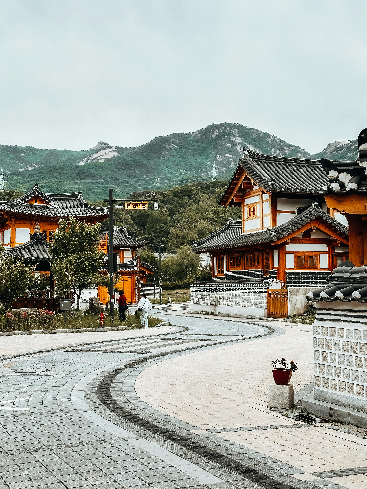
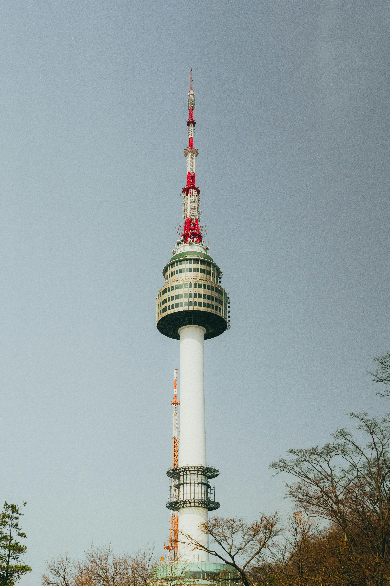
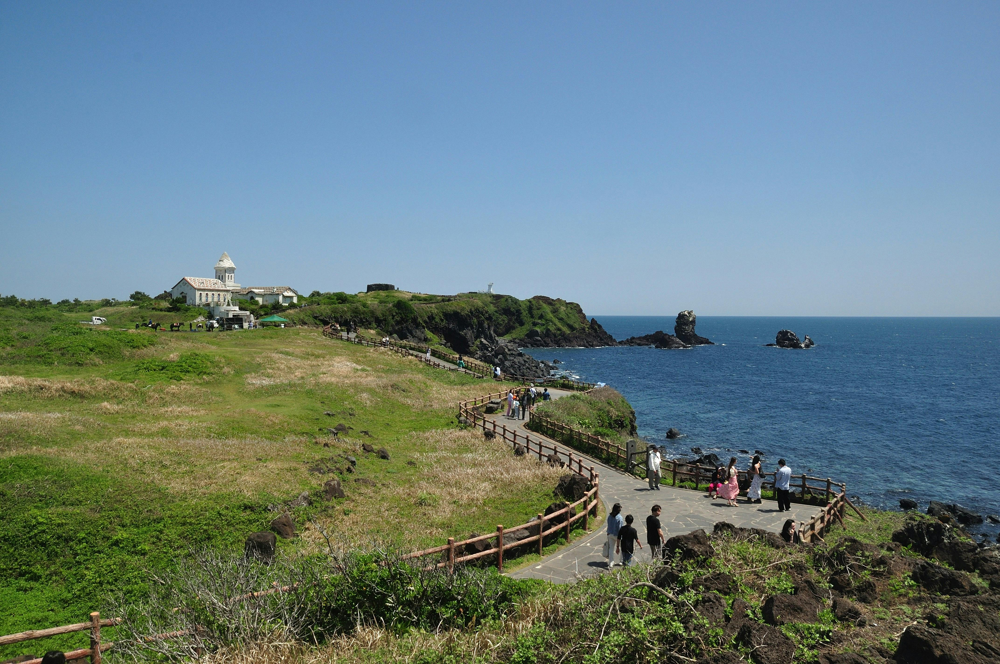
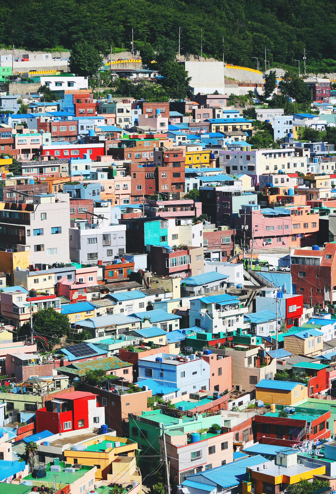
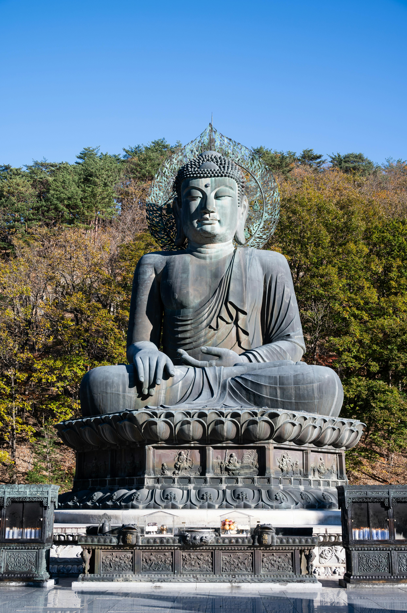
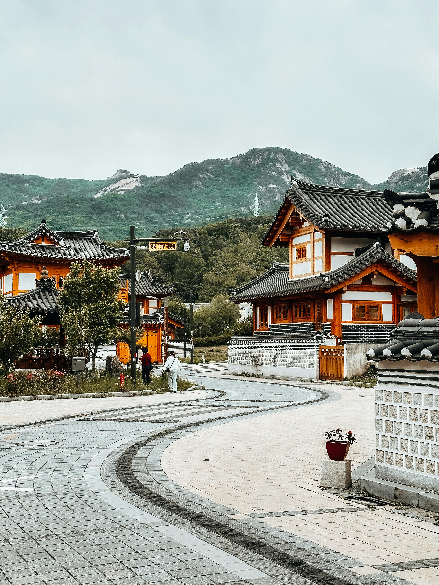
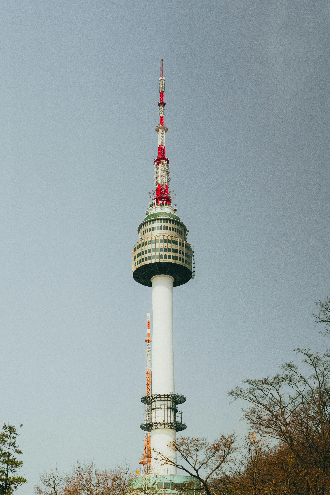
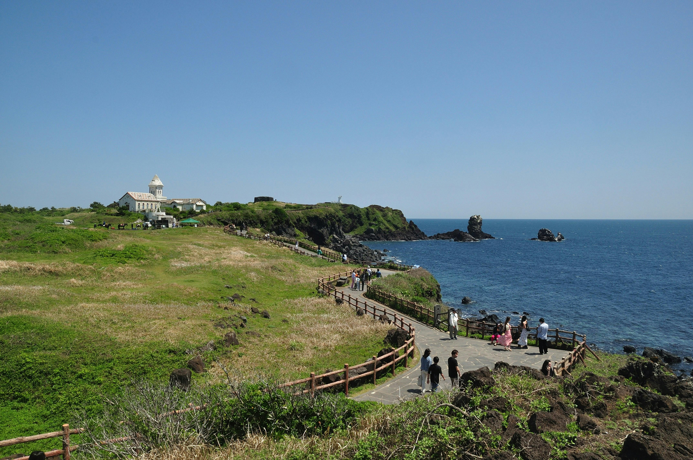
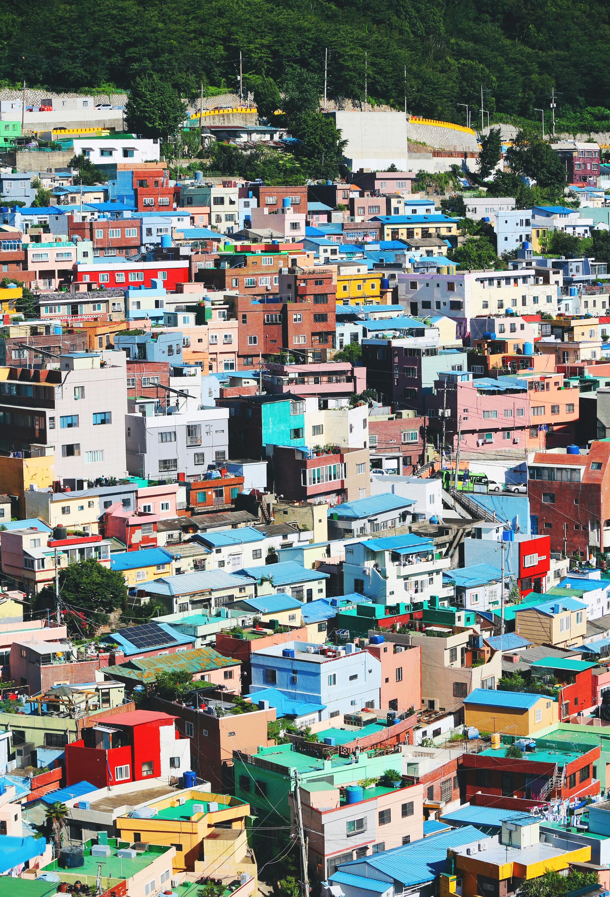
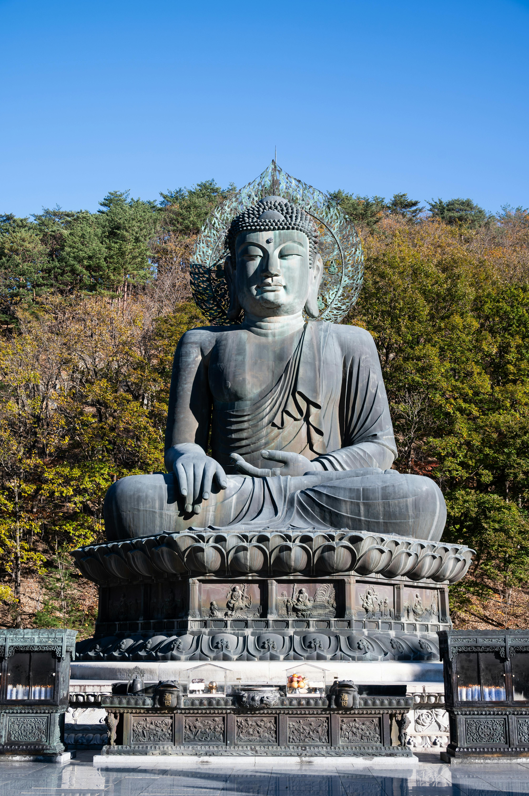
These are the recommended places to visit if you plan on having a tour in South Korea. This goes in order from left to right: Gyeongbokgung Palace, Bukchon Hanok Village, N Seoul Tower
, Jeju Island, Busan’s Gamcheon Culture Village, Seoraksan National Park.
Disclaimer: Photos shown here are taken from Pexels.com.
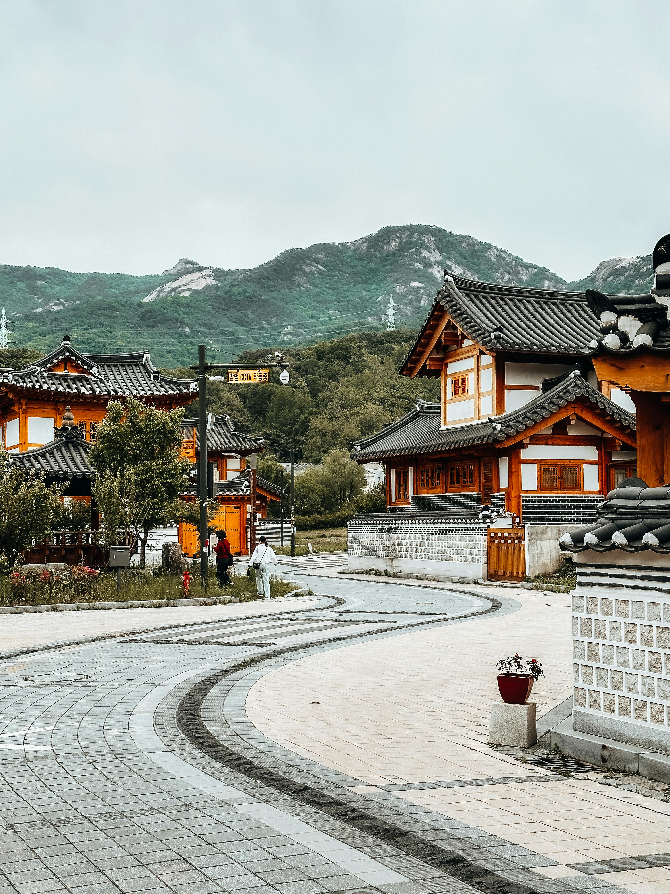
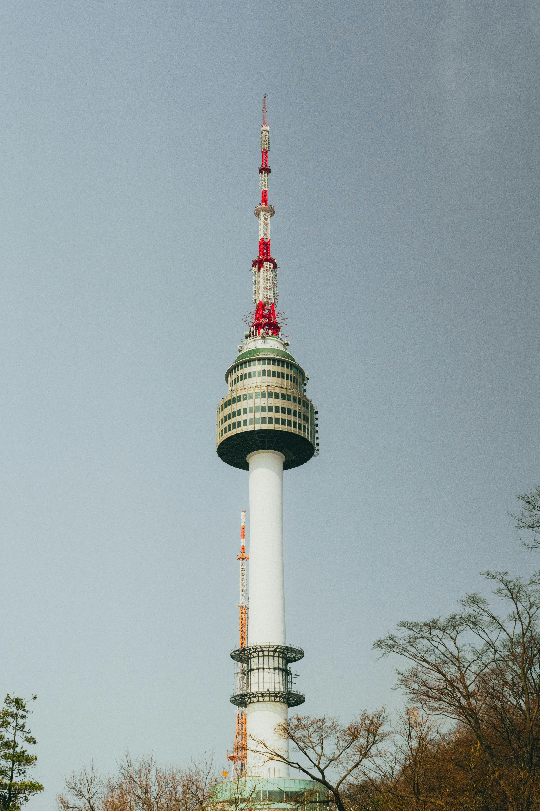
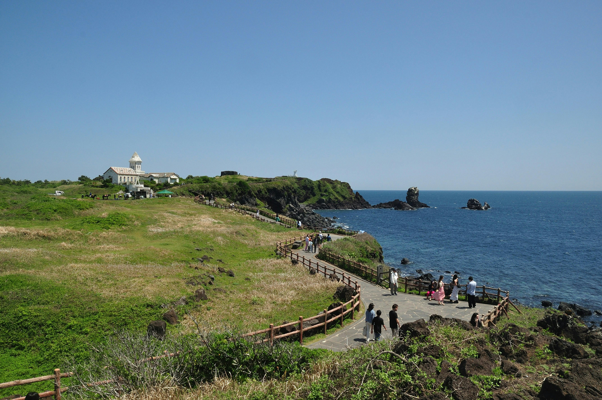
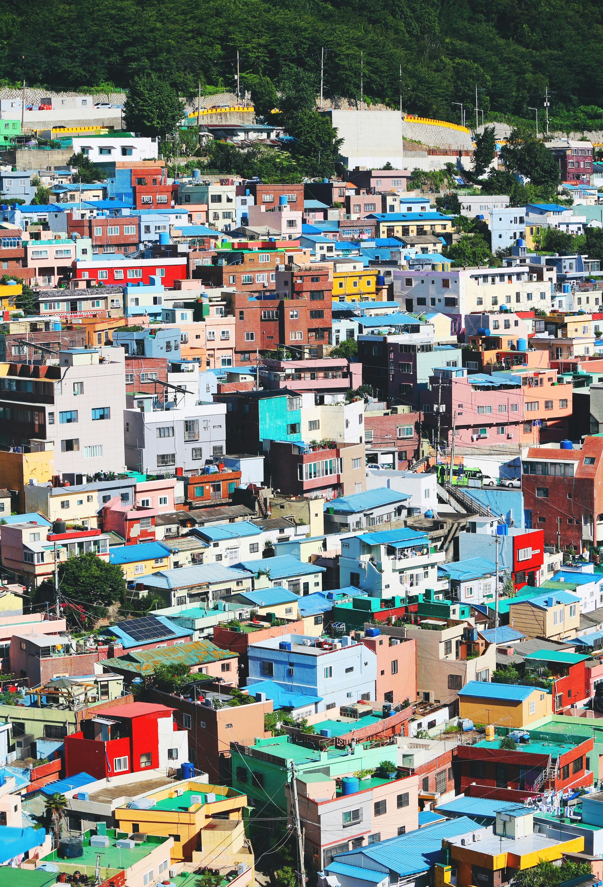
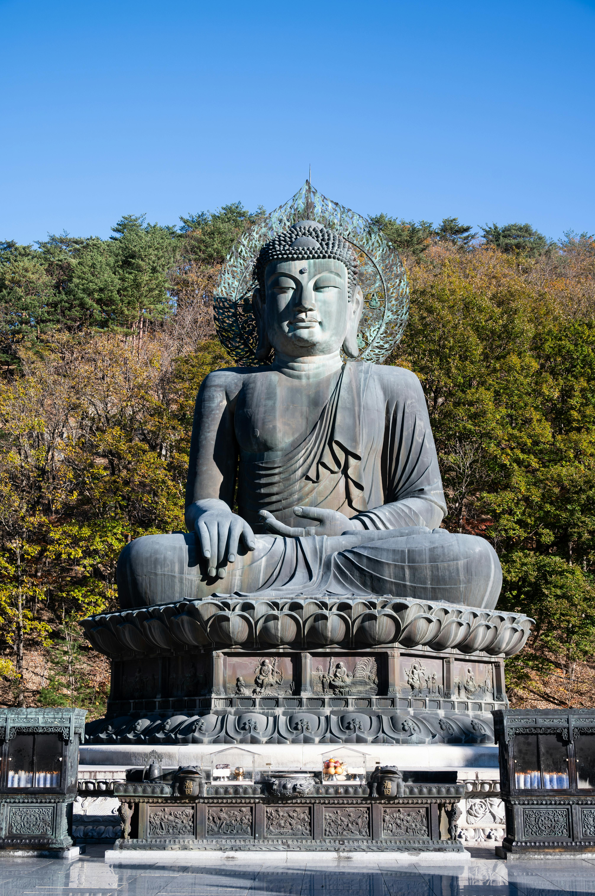